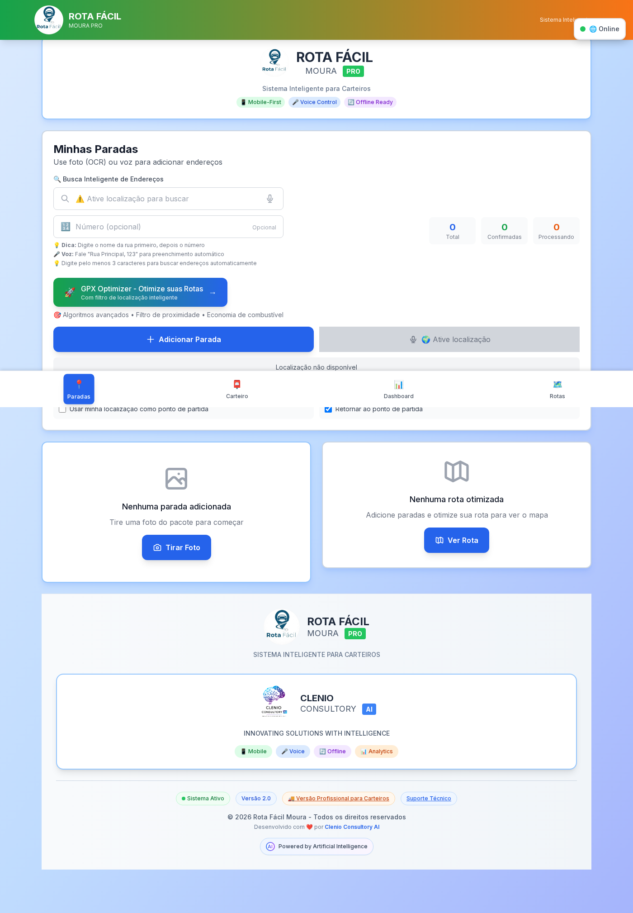

Case Study
Rota Fácil
Sistema inteligente de roteirização e logística automatizada.
Status
Experimental
Stack
Python, TypeScript
Foco
Otimização de rotas
Preview

Problema
Roteirização manual gera desperdício de tempo, custos altos e pouca previsibilidade operacional.
Solução
Motor de otimização que prioriza tempo, custo e restrições de entrega para sugerir rotas eficientes.
Arquitetura
Entrada de pedidos → Otimizador → Motor de regras → Sugestão de rotas
Pedidos + restrições
↓
Otimização matemática
↓
Regras de negócio
↓
Rotas recomendadas
↓
Otimização matemática
↓
Regras de negócio
↓
Rotas recomendadas
Decisões técnicas
Separação entre otimização matemática e regras de negócio para facilitar iteração do modelo.
Resultado
Rotas mais previsíveis e menor tempo de planejamento operacional.